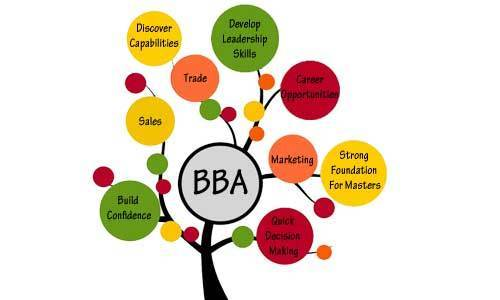

Admission in Bachelor Business Administration
BBA course can apply when the notification is live. The application forms are available through online and offline modes. The candidates can apply for the course during the months of May and June. Institutes which are conducting entrance exams for the candidates should pass with merit marks for the admission.

Eligibility For BBA Course
The Minimum eligibility for BBA is (10+2) from required institutes. Students who pass class 12 and HSC exams are eligible for doing BBA course. But some institutes make the eligibility with the minimum percentage of 50% or 60% based on the university standards.
FEE Structure for BBA Course
According to the University, the average tuition fees for three years range between 1 Lakh INR to 2.5 Lakhs INR. The course can be pursued either as a Full-Time Graduate Course or Part Time Graduate Course.
BBA Course Duration
The program of BBA contains lectures, practical session, projects, examinations, assignments, viva. The Course Duration of BBA is 3 years with six semesters. Managerial as well as communication skills can be developed through BBA Course.
syllabus for BBA Course
SEM One
- Computer fundamentals
- Business economics
- Business Mathematics
- Financial accounting
- Principles of management
- Personality development & communication skill
SEM Two
- Cost accounting
- Data base management systems
- Personality development & communication skills
- Quantitative techniques & operations research in management
- Business economics
- Business organization
SEM Three
- Marketing management
- Organization behavior
- Personality development & communication skills
- Indian economy
SEM Four
- HR Management
- Marketing research
- Taxation laws
- Business environment
- Business laws
- Computer application
SEM Five
- Marketing management
- Production & operations management
- Values & ethics in business
- Financial management
- Management information systems
SEM Six
- International business management
- Project planning & evaluation
- Business policy & strategy
- Entrepreneurship development
- Environmental science
List of Few Colleges offering BBA :
- St. Xavier’s College Kolkata
- Christ University, Bangalore
- Symbiosis University, Pune
- Lovely Professional University, Punjab
- Pondicherry University
- Prestige Institute of Management, Gwalior
Specialization Courses:
- Management information systems
- Marketing
- Supply chain management
- Finance
- Legal Studies
- Management
- Accounting
- Entrepreneurship
Opportunities of Jobs – BBA Career Options
- Business Consultancies
- Multinational Companies
- Financial Organizations
- Export Companies